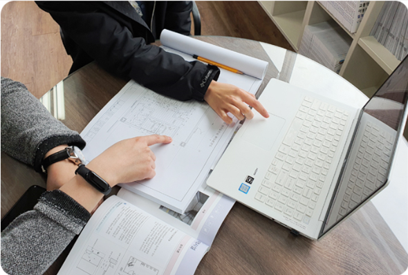
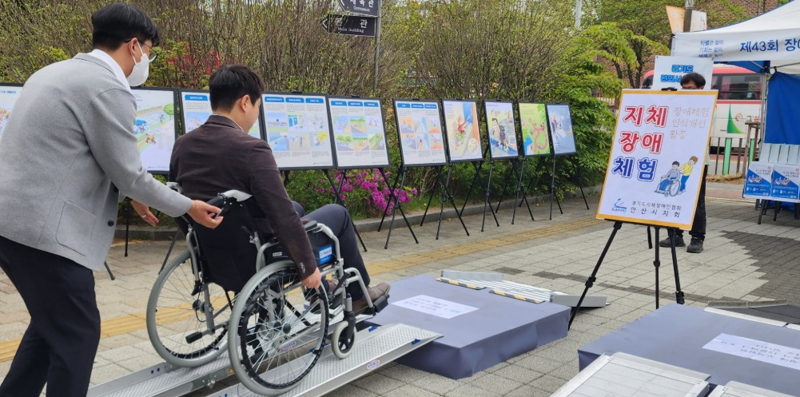
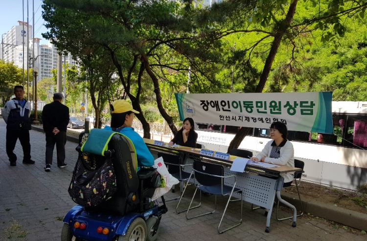
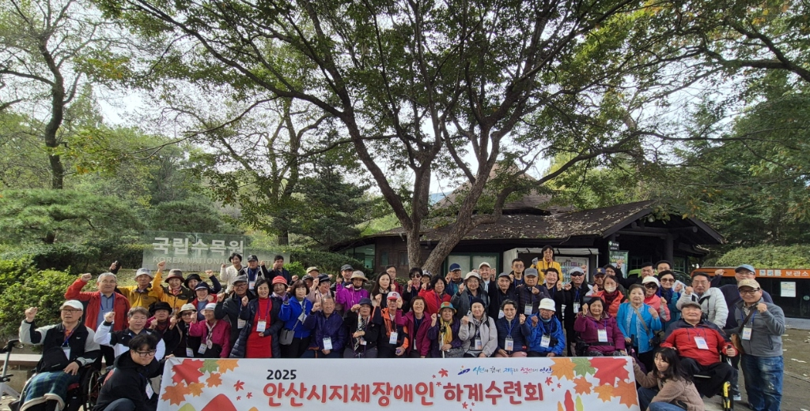

함께 나누는 온정, 더불어 사는 세상을 만들어갑니다.

장애인이 일상생활에서 안전하고 편리하게 시설과 설비를 이용할 수 있도록 편의시설 설치 촉진 및 기술 지원을 수행합니다.

비장애인들을 대상으로 장애와 장애인에 대한 올바른 이해를 돕고, 더불어 사는 사회 환경을 조성하기 위한 교육 사업입니다.

장애인이 겪는 각종 불편사항을 접수하고, 적절한 처리 및 관계 기관과의 연계를 통해 신속하게 문제를 해결할 수 있도록 돕습니다.

신체적 기능 향상과 건전한 사회참여를 도모하기 위한 각종 취미, 문화예술 및 체육 활성화 프로그램을 지원합니다.